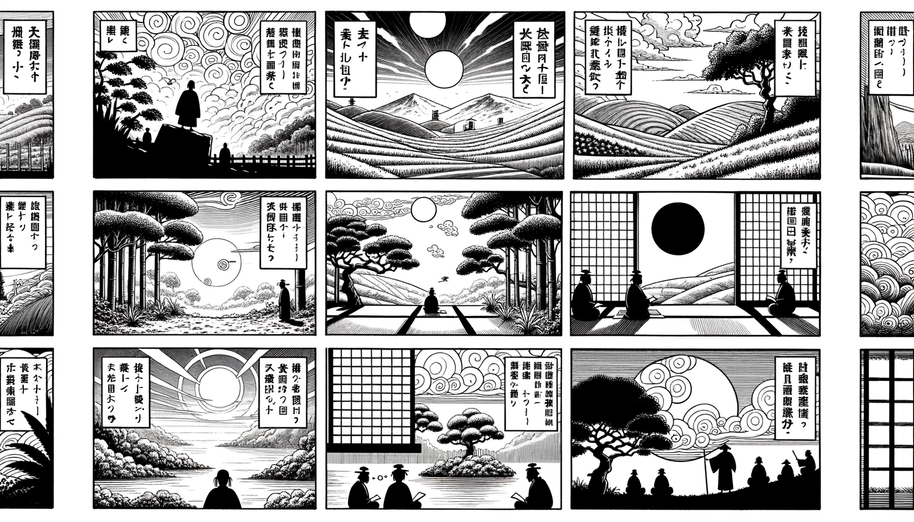

七十五巻 巻一覧
正法眼藏第44 佛道
本紹介ページの導入・語彙・深掘り・クイズは tools/regen_volume_intro_from_corpus.py が OpenAI API で生成したものです（入力は当巻の原文からの短い抜粋のみ）。内容はモデル出力のため、重要箇所は必ず原文・教本と照合してください。
出典: https://shomonji.or.jp/zazen/doc/genzou.html
原文・現代語訳の全文は 全文ページを参照してください。
この巻の紹介（導入）
曹谿古佛、あるとき衆にしめしていはく、慧能より七佛にいたるまで四十祖あり。この道を參究するに、七佛より慧能にいたるまで四十佛なり。
佛法の正命、ただこの正傳のみなり。佛法はかくのごとく正傳するがゆゑに、附囑の嫡嫡なり。
語彙の足場
- 曹谿古佛：曹谿古佛は、禅宗の祖とされる仏の一人であり、特に曹洞宗の教えにおいて重要な位置を占める存在である。
- 慧能：慧能は、中国禅宗の六祖とされ、彼の教えは「無心」や「即心即仏」といった概念を中心に展開される。
- 正法眼藏：正法眼藏は、仏教の真理や教えを象徴するもので、特に禅宗において重要視される教典である。
- 禪宗：禪宗は、直接的な体験を重視し、言葉や文字を超えた悟りを追求する仏教の一派である。
- 迦葉：迦葉は、釈迦の弟子の一人で、仏教の初期において重要な役割を果たした人物である。
原文（要点の抜粋）
当巻の冒頭付近からの短い抜粋です。長い引用は載せていません。 全文は全文ページを参照してください。出典はリポジトリ内 doc/正法眼蔵.txt です。原文の参照元: https://shomonji.or.jp/zazen/doc/genzou.html
曹谿古佛、あるとき衆にしめしていはく、慧能より七佛にいたるまで四十祖あり。
この道を參究するに、七佛より慧能にいたるまで四十佛なり。佛佛祖祖を算數するには、かくのごとく算數するなり。かくのごとく算數すれば、七佛は七祖なり、三十三祖は三十三佛なり。曹谿の宗旨かくのごとし、これ正嫡の佛訓なり。正傳の嫡嗣のみ、その算數の法を正傳す。
釋迦牟尼佛より曹谿にいたるまで三十四祖あり。この佛祖相承、ともに迦葉の如來にあひたてまつれりしがごとく、如來の迦葉をえましますがごとし。
釋迦牟尼佛の迦葉佛に參學しましますがごとく、師資ともに于今有在なり。このゆゑに、正法眼藏まのあたり嫡嫡相承しきたれり。佛法の正命、ただこの正傳のみなり。佛法はかくのごとく正傳するがゆゑに、附囑の嫡嫡なり。
しかあれば、佛道の功徳要機、もらさずそなはれり。西天より東地につたはれて、十萬八千里なり。在世より今日につたはれて二千餘載、この道理を參學せざるともがら、みだりにあやまりていはく、佛祖正傳の正法眼藏涅槃妙心、みだりにこれを禪宗と稱ず。祖師を禪祖と稱ず、學者を禪子と號す。あるいは禪和子と稱じ、あるいは禪家流の自稱あり。これみな僻見を根本とせる枝葉なり。西天東地、從古至今、いまだ禪宗の稱あらざるを、みだりに自稱するは、佛道をやぶる魔なり、佛祖のまねかざる怨家なり。
石門林間録云、菩提達磨、初自梁之魏。經行於嵩山之下、倚杖於少林。面壁燕坐而已、非習禪也。久之人莫測其故。因以達磨爲習禪。夫禪那諸行之一耳。何足以盡聖人。而當時之人、以之、爲史者、又從而傳於習禪之列、使與枯木死灰之徒爲伍。雖然聖人非止於禪那、而亦不違禪那。如易出于陰陽、而亦不違乎陰陽（石門の林間録に云く、菩提達磨、初め梁より魏に之く。嵩山の下に經行し、少林に倚杖す。面壁燕坐するのみなり、習禪には非ず。久しくなりて人其の故を測ること莫し。因て達磨を以て習禪とす。夫れ禪那は、諸行の一つならくのみ。何ぞ以て聖人を盡すに足らん。而も當時の人、之を以てし、爲史の者、又從へて習禪の列に傳ね、枯木死灰の徒と伍ならしむ。然りと雖も、聖人は禪那のみに非ず、而も亦た禪那に違せず。易の陰陽より出でて、而も亦た陰陽に違せざるが如し）。
第二十八祖と稱ずるは、迦葉大士を初祖として稱ずるなり。毘婆尸佛よりは第三十五祖なり。七佛および二十八代、かならずしも禪那をもて證道をつくすべからず。このゆゑに古先いはく、禪那は諸行のひとつならくのみ。なんぞもて聖人をつくすにたらん。
この古先、いささか人をみきたれり、祖宗の堂奥にいれり、このゆゑにこの道あり。近日は大宋國の天下に難得なるべし、ありがたかるべし。たとひ禪那なりとも、禪宗と稱ずべからず、いはんや禪那いまだ佛法の摠要にあらず。
しかあるを、佛佛正傳の大道を、ことさら禪宗と稱ずるともがら、佛道は未夢見在、未夢聞在なり、未夢傳在なり。禪宗を自號するともがらにも佛法あるらんと聽許することなかれ。禪宗の稱、たれか稱じきたる。諸佛祖師の禪宗と稱ずる、いまだあらず。しるべし、禪宗の稱は、魔波旬の稱ずるなり。魔波旬の稱を稱じきたらんは魔儻なるべし、佛祖の兒孫にあらず。
世尊靈山百萬衆前、拈優曇花瞬目、衆皆默然。唯迦葉尊者、破顔微笑（世尊靈山百萬衆の前にして、拈優曇花瞬目したまふに、衆皆默然たり。唯迦葉尊者のみ破顔微笑せり）。
世尊云、吾有正法眼藏涅槃妙心、竝以僧伽梨衣、附囑摩訶迦葉（世尊云はく、吾有正法眼藏涅槃妙心、竝びに僧伽梨衣を以て、摩訶迦葉に附囑す）。
世尊の迦葉大士に附囑しまします、吾有正法眼藏涅槃妙心なり。このほかさらに吾有禪宗附囑摩訶迦葉にあらず。竝附僧伽梨衣といひて、竝附禪宗といはず。しかあればすなはち、世尊在世に禪宗の稱またくきこえず。
図解（4コマ・AI生成）
教義の根拠は原文・出典に従い、漫画は比喩の補助に留めてください。

深掘り（読解の手掛かり）
- 七佛から慧能までの四十仏が、仏道を参究する上での重要な存在である。
- 正法眼藏は、仏法の正命であり、正伝の重要性が強調されている。
- 禪宗の称を用いることが、仏道を破る魔であるとされ、注意が促されている。
- 仏道の真髄は、先佛からの伝受にあり、禪宗の名を持つことが誤りであるとされている。
確認（形成評価）
各設問の下の「採点」で正誤を表示します（ブラウザ内のみ。ログは送りません）。